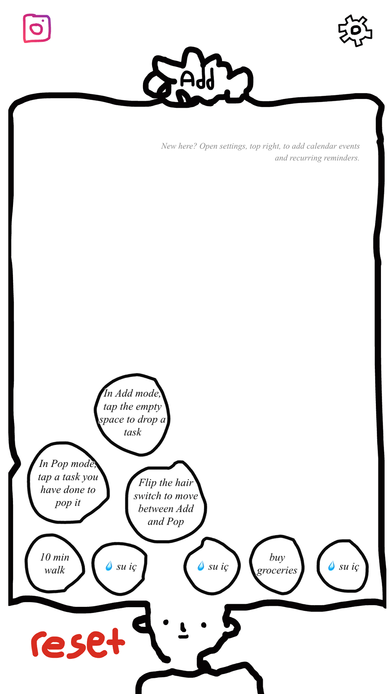
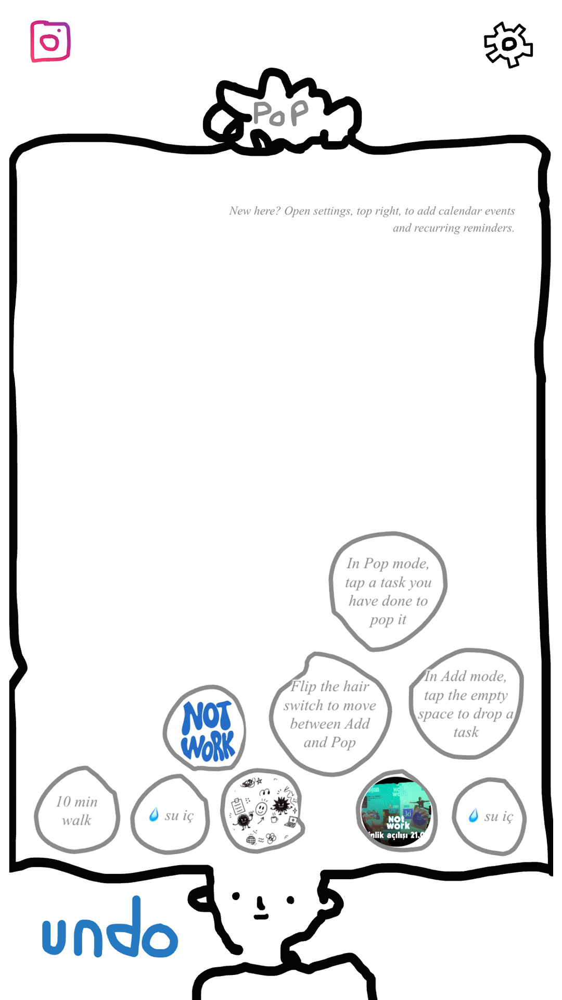

why I made it
✶ the backstoryI always have about fifteen tiny things bouncing around in my head at once — text someone back, reorder a filter, look something up, cancel a thing. None of it is important enough for a real to-do app, but all of it is loud enough to be annoying. Every task manager I tried wanted me to set up categories and priorities before I could even write the thought down, so I stopped using all of them. Patlat is the opposite of that: drop the thought in as a bubble, forget about it, and pop it when it's done.


how it works
✶ the basicsTap an empty spot, type the thing, and it becomes a bubble. That's the whole "add a task" flow. When it's done, you pop it — and you get to pick how: flip the little switch in the hair and tap it, press and hold for three seconds, or just double-tap it. Pick whichever feels most satisfying and change it any time in settings.
what's in it
✶ the features- bubbles, not lists — every task is a little bubble that piles up, so the clutter is visible instead of buried in a list.
- three ways to pop — hair switch, hold, or double-tap, whichever fits your hand.
- multiple boards — open as many "heads" as you want, each with its own pile, for work, home, or whatever needs separating.
- reminders that show up as bubbles — one-off or recurring, they pop into the board on their day, so you don't need a separate calendar app.
- zero setup — no categories, no priority levels, no onboarding forms. Just start dropping thoughts in.
try it
It's free to use, right in your browser, no account needed.
open patlat →